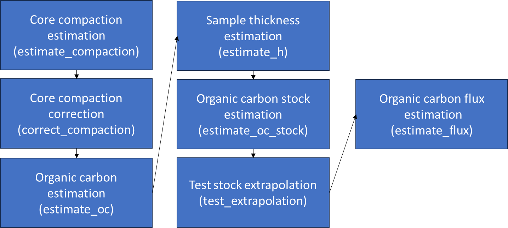

The goal of BlueCarbon is to facilitate the estimation of organic carbon stocks and fluxes from soil/sediment cores from blue carbon ecosystems. It contains seven main functions to estimate the compression of cores, mathematically correct core compression, estimate sample thickness, estimate organic carbon content from organic matter content, estimate organic carbon stocks fluxes and visualize the error of stock extrapolation.

estimate_oc - Organic carbon content estimation from organic carbon data
There is linear correlation between organic carbon and organic matter content. This correlation can change between ecosystems and sampling sites due to changes in organic matter composition among other factors. This function model a linear correlation between organic matter and organic carbon content in your samples and predict the content of organic carbon for those samples were there is no organic carbon values. Estimation of organic carbon is done by means of linear regressions on log(organic carbon) ~ log(organic matter). It gives back a organic carbon value for each organic matter value provided. If there is a organic carbon value for that sample it return the same value, else, generates a model for that site, else, model for specie, else, model for that ecosystem. If a model can not be created due to the low number of samples (<10) it uses the equations in Howard et al. 2014 (obtained from Craft et al. 1991, Fourqurean et al. 2012 and Kaufmann et al. 2011) to estimate the organic carbon. It is unlikely, but possible, that a model will predict a higher organic carbon tn organic matter content. This is not possible in nature. If this is the case the function will give a warning and it is recommended to discard that model.
Howard, J. et al. Coastal Blue Carbon methods for assessing carbon stocks and emissions factors in mangroves, tidal salt marshes, and seagrass meadows. Habitat Conservation (2014).
Craft, C. B., Seneca, E. D. & Broome, S. W. Loss on ignition and kjeldahl digestion for estimating organic carbon and total nitrogen in estuarine marsh soils: Calibration with dry combustion. Estuaries 14, 175–179 (1991).
Fourqurean, J. W. et al. Seagrass ecosystems as a globally significant carbon stock. Nat. Geosci. 5, 505–509 (2012).
Kauffman, J. B., Heider, C., Cole, T. G., Dwire, K. A. & Donato, D. C. Ecosystem carbon stocks of micronesian mangrove forests. Wetlands 31, 343–352 (2011).
estimate_h - Sample thickness estimation
For those cores were only selected samples were measured it is necessary to assign a carbon density to the empty spaces before the estimation the total stock. This function checks for gaps between samples and, if any, divide this space between the previous and next sample to return sample thickness without gaps in the core. The stock and flux estimation functions (estimate_oc_stock and estimate_flux) have this function incorporated and it is not necessary to run it before.
estimate_oc_stock - Organic carbon stock estimation
Estimates carbon stocks from soil core data down to a specified depth, 100 cm by default. If the core does not reach the desired depth, it extrapolates the stock from a linear model between accumulated mass of organic carbon and depth.
test_extrapolation - Visualize the error of stock extrapolation
This function subset those cores that reach the desired depth, estimates the stock (observed stock), estimate the stock from the linear relation of organic carbon accumulated mass and depth using the 90, 75, 50 and 25% top length of the indicated desired depth. Compares the observed stock with the estimated stocks by extrapolation. This function requieres that some of you core do reach the desired depth.
estimate_flux - Organic carbon flux estimation
Estimate the average organic carbon flux to the soil in a indicated time frame (by default last 100 years) from the organic carbon concentration and ages obtained from a age-depth or age-accumulated mass models (provided by the user).
Installation
# install.packages("devtools")
devtools::install_github("EcologyR/BlueCarbon")The code to create this package is available here.